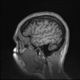
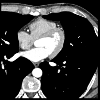
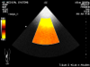
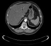
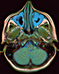

My (fake) PACS
These are a few data example that are displayed as they could be on a web interface to a PACS system. Click on the list item to launch DWV with the selected data.
-

Baby MRI
Brain MR, 256*256*1, LittleEndianExplicit [1.2.840.10008.1.2.1]
The folowing items link to data available online but not in a secured way due to
same origin policy.
To see them start Google Chrome with --disable-web-security
(do not forget to remove that flag for normal browsing).
-

Toutatix
Chest CT(A), 512*512*1, LittleEndianExplicit [1.2.840.10008.1.2.1], from the Osirix examples, hosted on my github.
-

Goudurix
Chest CT(A), 512*512*1, LittleEndianExplicit [1.2.840.10008.1.2.1], from the Osirix examples, hosted on my github.
-

US
US, 640*480*1, BigEndianExplicit [1.2.840.10008.1.2.2], from the GDCM examples, hosted on my github.
-

Cerebrix
Brain SC (Secondary Capture), 176*224*1, JPEG2000 [1.2.840.10008.1.2.4.91], from the Osirix examples, hosted on my github, NOT SUPPORTED YET....
-

JPEG 2000
via wado, 176*224*1, JPEG2000 [1.2.840.10008.1.2.4.91], from the dicom.vital-it.ch examples, NOT SUPPORTED YET....
-

Calibration
via wado, 512x512x1, LittleEndianExplicit [1.2.840.10008.1.2.1], MONOCHROME2, 8 bits, from the dicom.vital-it.ch examples, Bad display.
-

Anonymised
via wado, 512x512x1, LittleEndianExplicit [1.2.840.10008.1.2.1], MONOCHROME2, 16 bits, from the dicom.vital-it.ch examples.
-

Anonymous
via wado, 2018x4915x1, LittleEndianExplicit [1.2.840.10008.1.2.1], MONOCHROME1, 16 bits, from the dicom.vital-it.ch examples, carefull, big!.
Non DICOM Image formats:
-

JPEG
Brain PET from wikipedia (http://en.wikipedia.org/wiki/File:PET-image.jpg), 531*600*1.
-

PNG
Brain MRI from wikipedia (http://en.wikipedia.org/wiki/File:Brain_MRI_112010_rgbca.png), 389*504*1.
Data sources: